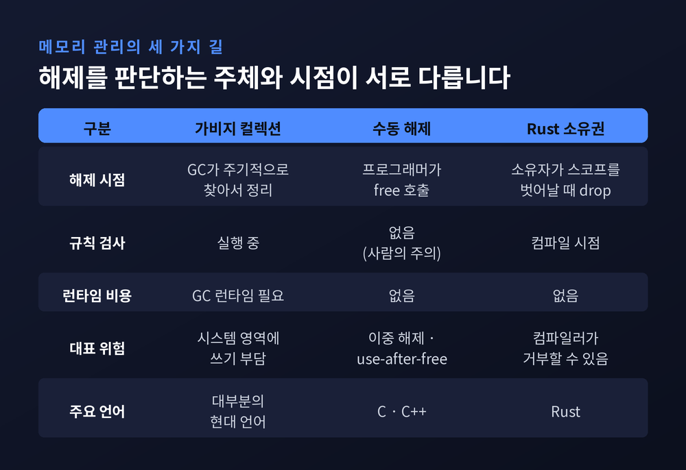
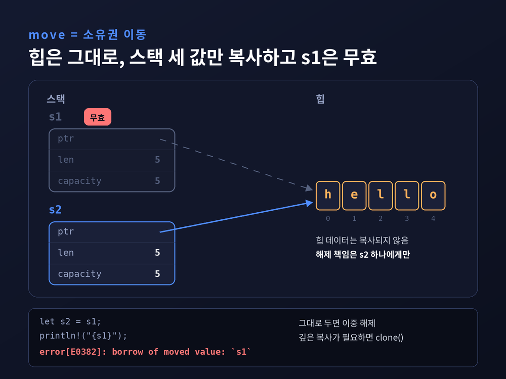
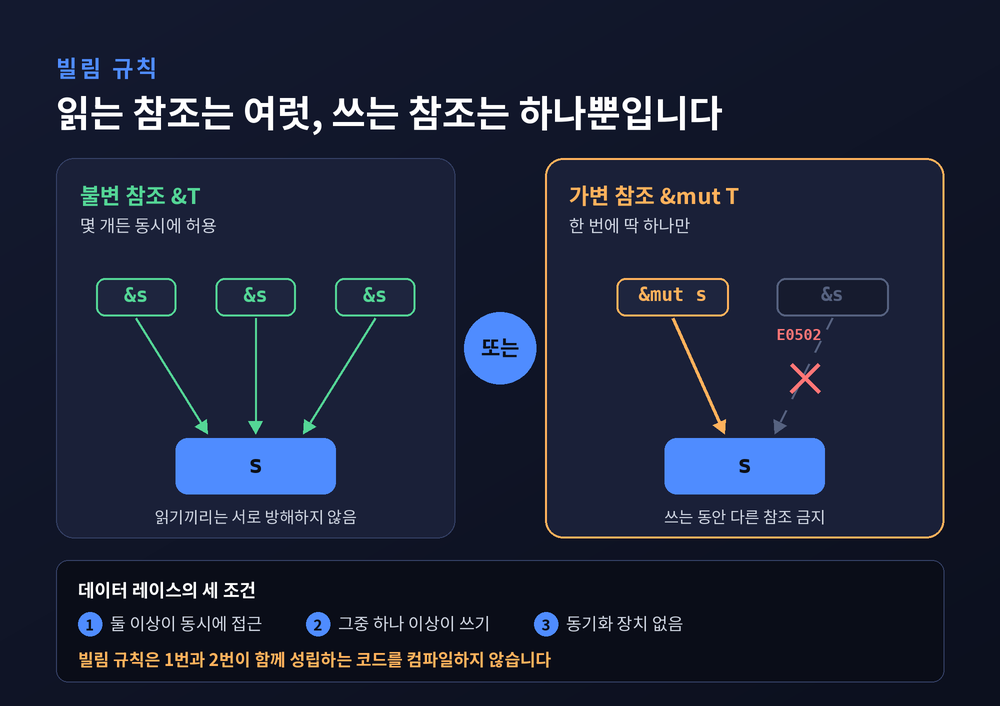
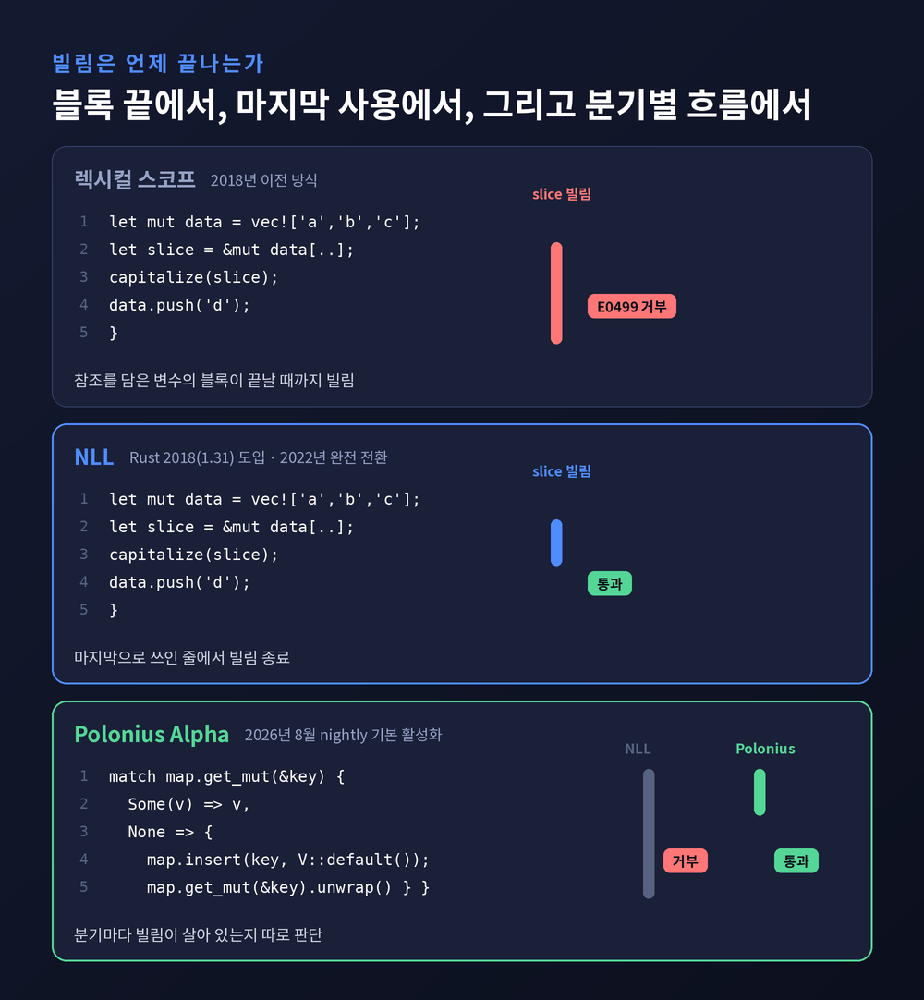
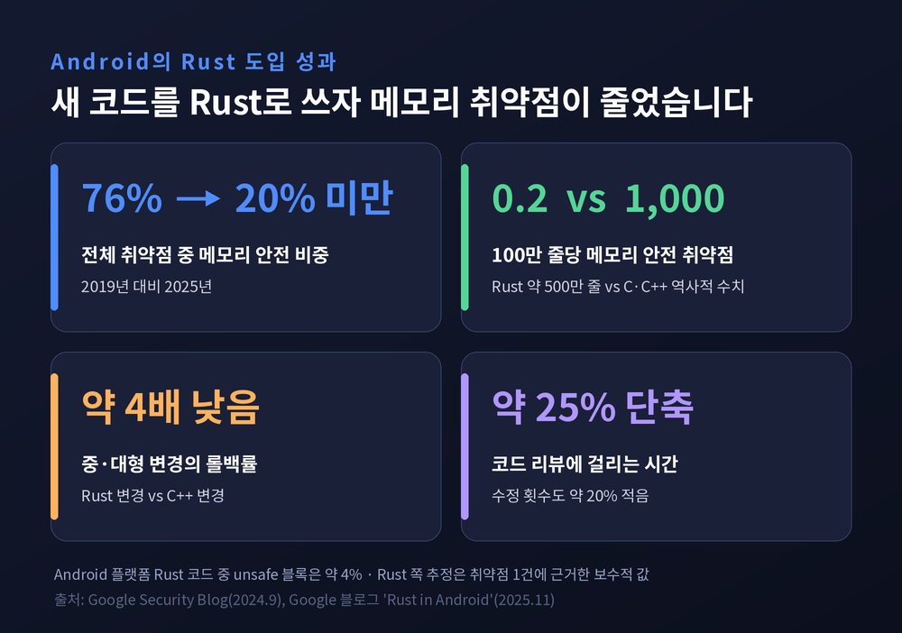

Rust 소유권과 빌림 검사기 — GC 없이 메모리 안전을 지키는 원리
이번 글에서는 Rust 소유권과 빌림 검사기가 어떤 규칙으로 움직이는지 정리해 보겠습니다. 가비지 컬렉터 없이도 이중 해제, use-after-free, 데이터 레이스를 컴파일 단계에서 막는 방법이 주제입니다. 코드 몇 줄과 컴파일러 에러 메시지를 따라가며 원리를 살펴봅니다.

세 줄 요약
- Rust는 GC도 수동 해제도 아닌 제3의 방식을 씁니다. 모든 값에 소유자가 하나 있고, 소유자가 스코프를 벗어나면 값이 자동으로 해제됩니다.
- 값을 쓰고 싶을 때는 소유권을 넘기는 대신 빌립니다. 규칙은 "가변 참조 하나 또는 불변 참조 여러 개"와 "참조는 항상 유효해야 한다" 두 가지입니다.
- 이 규칙은 전부 컴파일 시점에 검사되어 실행 속도에 비용이 없습니다. Android는 이 방식으로 메모리 안전 취약점 비중을 76%에서 20% 아래로 낮췄습니다.
왜 메모리 안전이 이렇게 중요한가
숫자부터 보겠습니다.
Microsoft 보안대응센터(MSRC)는 2019년, 매년 CVE를 부여해 고치는 취약점의 약 70%가 메모리 안전 문제라고 밝혔습니다.
코드 리뷰와 교육, 정적 분석을 꾸준히 강화했는데도 이 비율은 10년 넘게 거의 변하지 않았습니다.
Chromium 프로젝트도 같은 결론에 이르렀습니다. 2015년 이후 심각도 높은 보안 버그 912건을 분석하니 약 70%가 메모리 문제였고, 그 절반이 use-after-free였습니다.
MSRC는 이런 버그를 세 갈래로 나눕니다.
할당된 범위 밖을 건드리는 공간적 오류, 이미 해제된 메모리를 가리키는 시간적 오류, 여러 스레드가 동기화 없이 같은 곳에 쓰는 데이터 레이스입니다.
특히 시간적 오류의 근본 원인을 "가변 상태를 가리키는 포인터의 별칭"이라고 짚었습니다.
이 표현을 기억해 두시면 뒤에 나올 빌림 규칙이 왜 그런 모양인지 자연스럽게 이해됩니다.
해결책이 없던 것은 아닙니다.
MSRC의 표현을 빌리면, 오늘날 쓰이는 언어 대부분은 가비지 컬렉션(GC) 덕분에 메모리 안전합니다.
문제는 운영체제 커널이나 네트워크 스택 같은 시스템 소프트웨어입니다. 이 영역은 GC라는 무거운 런타임을 감당하기 어렵습니다.
그래서 C와 C++이 오랫동안 자리를 지켜 왔고, 70%라는 숫자도 함께 따라왔습니다.
GC도 수동 해제도 아닌 세 번째 길
Rust 공식 문서는 메모리 관리 방식을 세 가지로 구분합니다.
첫째는 GC입니다. 프로그램이 도는 동안 더는 쓰지 않는 메모리를 주기적으로 찾아 정리합니다.
둘째는 수동 관리입니다. 프로그래머가 직접 할당하고 해제합니다.
공식 문서는 수동 관리의 함정을 세 문장으로 요약합니다. 잊으면 메모리가 새고, 너무 일찍 해제하면 무효한 변수가 남고, 두 번 해제하면 그것도 버그입니다. 할당 한 번에 해제 한 번을 정확히 짝지어야 한다는 뜻입니다.
셋째가 Rust의 방식입니다.
메모리를 컴파일러가 검사하는 소유권 규칙으로 관리합니다. 규칙을 어기면 아예 컴파일되지 않습니다.
그리고 소유권 관련 기능은 실행 중인 프로그램을 느리게 하지 않습니다. 모든 판단이 빌드 단계에서 끝나기 때문입니다.

소유권 규칙 세 줄과 move
규칙은 짧습니다.
- Rust의 모든 값에는 소유자가 있습니다.
- 소유자는 한 번에 하나뿐입니다.
- 소유자가 스코프를 벗어나면 값은 drop됩니다.
세 번째 규칙이 해제 시점을 정합니다.
변수가 닫는 중괄호 }에 닿으면 Rust가 drop 함수를 자동으로 호출해 힙 메모리를 돌려줍니다.
C++의 RAII 패턴을 언어 전체의 기본 규칙으로 끌어올린 셈입니다.
까다로운 부분은 두 번째 규칙입니다. 다음 코드를 보겠습니다.
let s1 = String::from("hello");
let s2 = s1;
println!("{s1}, world!"); // 컴파일 에러String은 스택에 포인터, 길이, 용량 세 값을 두고 실제 글자는 힙에 둡니다.let s2 = s1;은 스택의 세 값만 복사합니다. 힙의 글자는 그대로입니다.
이 상태로 두 변수가 모두 스코프를 벗어나면 같은 힙 메모리를 두 번 해제하게 됩니다. 이중 해제, 곧 메모리 손상과 보안 취약점으로 이어지는 버그입니다.
Rust는 이를 막으려고 대입 직후 s1을 무효로 처리합니다.
얕은 복사가 아니라 move, 즉 소유권 이동입니다.
그래서 세 번째 줄은 error[E0382]: borrow of moved value: s1으로 거부됩니다.
컴파일러는 친절하게 s1.clone()을 대안으로 제시합니다.
여기에는 설계 원칙 하나가 숨어 있습니다. Rust는 깊은 복사를 절대 자동으로 하지 않습니다.
비용이 드는 복사는 반드시 clone()이라는 글자로 코드에 드러납니다.
반면 정수, bool, f64, char처럼 스택에만 사는 값은 Copy 트레이트가 있어 move 대신 그냥 복사됩니다.Drop을 구현한 타입은 Copy가 될 수 없습니다. 해제할 자원이 있는 값이 몰래 복제되는 일을 규칙 차원에서 막는 장치입니다.

빌림: 소유하지 않고 쓰는 방법
소유권만 있다면 불편합니다.
함수에 String을 넘기면 소유권이 함수로 넘어가 호출한 쪽에서는 더 쓸 수 없습니다.
돌려받으려면 튜플로 다시 반환해야 합니다. 공식 문서도 이 방식을 "너무 번거롭다"고 인정합니다.
그래서 참조가 있습니다.&s1은 값을 소유하지 않고 가리키기만 합니다. 이 행위를 빌림이라고 부릅니다.
참조가 스코프를 벗어나도 원래 값은 해제되지 않습니다. 애초에 소유한 적이 없기 때문입니다.
그리고 참조는 C의 포인터와 달리, 살아 있는 동안 반드시 유효한 값을 가리킨다는 보장을 받습니다.
빌림에는 두 가지 규칙이 붙습니다.
- 어느 시점이든 가변 참조(
&mut) 하나, 또는 불변 참조(&) 여러 개 중 하나만 가질 수 있습니다. - 참조는 항상 유효해야 합니다.
첫 번째 규칙은 앞서 본 "가변 상태를 가리키는 별칭"을 정면으로 금지합니다.
읽기만 하는 사람은 몇 명이 있어도 서로 방해하지 않습니다. 쓰는 사람이 있다면 그 사람 혼자여야 합니다.
위반하면 에러 코드도 구체적입니다. 가변 참조를 두 번 만들면 E0499, 불변 참조가 살아 있는데 가변 참조를 만들면 E0502가 납니다.
이 규칙의 가장 큰 수확은 데이터 레이스입니다.
데이터 레이스는 둘 이상의 포인터가 같은 데이터에 동시에 접근하고, 그중 하나 이상이 쓰며, 동기화 장치가 없을 때 생깁니다.
빌림 규칙 아래에서는 "쓰는 포인터가 있는데 다른 포인터도 있는" 상황 자체가 컴파일되지 않습니다.
세 조건 중 두 개가 동시에 성립할 수 없으니, 데이터 레이스도 성립하지 않습니다.

두 번째 규칙은 댕글링 참조를 막습니다.
fn dangle() -> &String {
let s = String::from("hello");
&s
} // s는 여기서 해제됨함수가 끝나면 s는 해제되는데, 그 참조를 밖으로 돌려주려는 코드입니다.
C라면 컴파일되고 나중에 알 수 없는 곳에서 터졌을 것입니다.
Rust는 "반환 타입에 빌린 값이 있는데 빌려 올 원본이 없다"는 메시지로 거부합니다. 해결책은 참조가 아닌 String 자체를 반환해 소유권을 넘기는 것입니다.
라이프타임, 참조가 살아 있는 구간
빌림 검사기의 기본 원리는 한 문장입니다.
"빌려준 동안에는 값을 바꾸거나 옮길 수 없다."
그러려면 컴파일러가 "빌려준 동안"이 언제까지인지 알아야 합니다.
이 구간을 라이프타임이라고 합니다.
NLL 설계 문서(RFC 2094)는 두 개념을 구분합니다. 참조의 라이프타임은 참조가 사용되는 구간이고, 값의 스코프는 값이 해제되기 전까지의 구간입니다.
규칙은 하나입니다. 참조의 라이프타임은 원본 값의 스코프를 넘을 수 없습니다. 넘는 순간 해제된 메모리를 가리키게 되니까요.
대부분은 컴파일러가 알아서 추론합니다.
공식 문서가 "라이프타임 생략 규칙"이라 부르는 세 가지 패턴에 들어맞으면 따로 적을 필요가 없습니다.
추론이 모호할 때만 직접 표시합니다.
fn longest<'a>(x: &'a str, y: &'a str) -> &'a str {
if x.len() > y.len() { x } else { y }
}'a는 "반환되는 참조는 두 입력 중 더 짧게 사는 쪽만큼만 유효하다"는 약속입니다.
라이프타임 표기는 수명을 늘리거나 줄이는 명령이 아닙니다. 컴파일러가 검증할 수 있도록 관계를 적어 두는 계약에 가깝습니다.
빌림 검사기도 똑똑해졌습니다 — NLL에서 Polonius까지
초기 Rust의 빌림 검사기는 꽤 고지식했습니다.
참조를 변수에 담으면 그 변수의 블록이 끝날 때까지 빌림이 이어진다고 봤습니다.
let mut data = vec!['a', 'b', 'c'];
let slice = &mut data[..];
capitalize(slice);
data.push('d'); // 예전엔 에러slice는 capitalize 호출 이후 다시 쓰이지 않습니다. 그런데도 예전 검사기는 블록 끝까지 빌린 상태로 판단해 push를 거부했습니다.
개발자는 의미 없는 중괄호 블록을 하나 더 감싸야 했습니다.
예전엔 "블록이 끝나야 빌림이 끝난다"였습니다.
지금은 "마지막으로 쓰인 곳에서 빌림이 끝난다"입니다.
이 변화가 NLL(Non-Lexical Lifetimes)입니다.
라이프타임을 소스 코드의 블록 구조가 아니라, 컴파일러 내부 표현인 MIR의 제어 흐름 그래프로 계산합니다.
Rust 2018 에디션(1.31)에서 도입됐고, 옛 검사기는 2019년에 물러났습니다. 호환용으로 남았던 migrate 모드까지 2022년, Rust 1.63에서 정리됐습니다.
다만 NLL에도 한계가 남았습니다.
대표적인 것이 "맵에 값이 있으면 그 참조를 반환하고, 없으면 넣은 뒤 반환하는" 함수입니다.Some 분기에서 참조를 함수 밖으로 돌려주기 때문에, NLL은 그 빌림이 함수 전체에 걸린다고 보고 None 분기의 insert까지 거부합니다.
NLL의 분석이 분기별 흐름을 구분하지 않기 때문입니다.
이 문제를 푸는 차세대 검사기가 Polonius입니다.
2018년 NLL 작업에서 갈라져 나왔지만, 초기 구현은 너무 느려 실용화되지 못했습니다.
2023년에 기존 NLL 구조를 크게 바꾸지 않는 새 설계가 나왔고, 2026년 8월 4일 Rust 공식 블로그는 이 "Polonius Alpha"를 nightly에서 기본으로 켰다고 발표했습니다.
목표는 연말 전 안정화입니다. 흐름에 민감한(flow-sensitive) 분석이라 앞의 맵 예제를 통과시킵니다.
비용도 솔직하게 공개됐습니다.
다운로드 상위 1만 개 크레이트에서 눈에 띄는 컴파일 시간 회귀는 드물었지만, 빌림이 많은 일부 크레이트는 최악의 경우 2~3배 느려졌습니다.
Polonius Alpha가 모든 올바른 코드를 받아들이는 것도 아닙니다. 공식 글은 초기 Polonius가 통과시키던 일부 코드를 여전히 거부한다고 밝혔습니다.
정확한 안정화 버전도 아직 정해지지 않았습니다.

컴파일러가 확신하지 못할 때
정적 분석에는 태생적 한계가 있습니다.
공식 문서는 이 점을 숨기지 않습니다. 컴파일러가 확신하지 못하면 올바른 프로그램도 거부할 수 있다고 적습니다.
잘못된 프로그램을 통과시키면 모든 보장이 무너지지만, 올바른 프로그램을 거부하면 불편할 뿐 사고는 나지 않습니다. Rust는 일관되게 뒤쪽을 택합니다.
그래서 탈출구가 마련돼 있습니다.RefCell<T>는 같은 빌림 규칙을 런타임에 검사합니다. 활성 빌림 수를 세다가 규칙을 어기면 컴파일 에러 대신 already borrowed: BorrowMutError로 panic합니다.Rc<T>는 참조 카운팅으로 소유자를 여럿 둘 수 있게 해 줍니다. 둘을 합친 Rc<RefCell<T>>는 그래프나 트리처럼 공유와 변경이 모두 필요한 구조에 쓰입니다.
대가는 분명합니다. 약간의 런타임 비용이 들고, 오류가 배포 뒤에야 드러날 수도 있습니다.
그 아래에는 unsafe가 있습니다.
하드웨어 제어나 C와의 연동처럼 컴파일러가 검증할 수 없는 코드는 unsafe 블록 안에 둡니다.
흔한 오해와 달리 unsafe가 Rust의 안전 검사를 전부 끄지는 않습니다. 그리고 위험한 부분을 작은 블록에 가두고 안전한 API로 감싸는 것이 관례입니다.
Android의 Rust 코드에서 unsafe 블록은 약 4%입니다.
실제로 효과가 있었는가
Google의 Android 팀은 2019년 무렵부터 새 코드를 메모리 안전 언어로 쓰는 쪽으로 방향을 틀었습니다.
Android 취약점 가운데 메모리 안전 문제의 비중은 2019년 76%에서 2024년 24%로 내려갔고, 2025년에는 처음으로 20% 아래로 떨어졌습니다.
2025년 11월 발표에는 더 구체적인 수치가 담겼습니다.
Android 플랫폼의 Rust 코드 약 500만 줄에서 나온 메모리 안전 취약점 후보는 단 1건이었고, 그마저 출시 전에 고쳐졌습니다.
100만 줄당 0.2건입니다. 같은 팀이 기록한 C/C++의 역사적 수치는 100만 줄당 1,000건 안팎입니다.
Google은 이를 "1000배 이상 감소"로 표현했습니다.
속도 면의 수확도 있었습니다.
중·대형 변경에서 Rust 코드의 롤백률은 C++보다 약 4배 낮았고, 코드 리뷰 시간은 약 25% 짧았습니다.
안전한 길이 느린 길이라는 통념과는 반대되는 결과입니다.
다만 읽을 때 주의할 점이 있습니다.
Rust 쪽 추정은 취약점 1건에 기댄 값이라 표본이 작습니다. 정밀한 배율보다는 자릿수가 다르다는 신호로 보는 편이 정확합니다.
Android 코드의 다수는 여전히 C와 C++입니다. Google도 감소 원인을 새 코드의 언어 전환과, 오래된 코드일수록 취약점이 줄어드는 경향이 겹친 결과로 설명합니다.

끝으로 한 마디만 더 드리겠습니다.
Rust 소유권과 빌림 검사기가 하는 일은 결국 하나입니다.
"누가 이 메모리를 책임지는가"와 "지금 누가 이 메모리를 바꿀 수 있는가"를 컴파일러가 끝까지 따지는 것입니다.
GC는 이 질문을 실행 중에 대신 풀어 주고, C는 이 질문을 프로그래머의 기억력에 맡깁니다. Rust는 이 질문을 코드에 적게 만듭니다.
"값의 주인은 하나, 쓰는 손도 한 번에 하나."
처음에는 컴파일러가 까다로운 선배처럼 느껴질 수 있습니다. 에러 메시지가 길고, 통과시켜 주지 않는 이유가 억울할 때도 있습니다.
그래도 그 거절 하나하나가 새벽의 크래시 리포트 대신 빌드 창에 먼저 나타난 것이라고 생각하면, 조금은 고마운 잔소리로 들립니다.
Rust를 배울 가치가 있느냐고 물으신다면, 이 규칙 두세 줄을 받아들일 여유만 있다면 충분히 그렇다고 답하겠습니다.